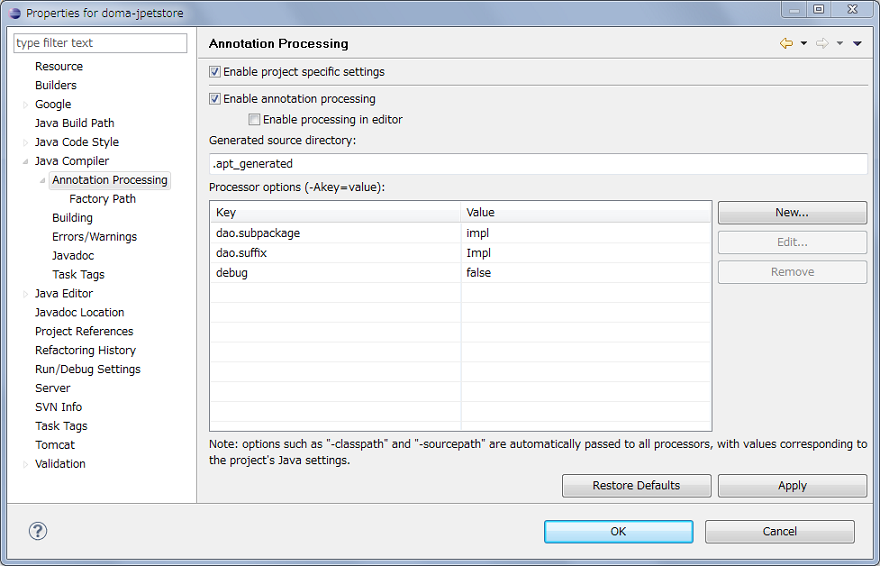

概要
Doma JPetStoreは、SAStrutsとの連携方法を示すデモ用Webアプリケーションです。 他のプロジェクトの雛形として使用されることも想定しています。
このアプリケーションは、iBATISが提供する JPetStore 5.0 Example Application をベースに作成されています。
セットアップ
Eclipseのインストール
バージョン3.5以上のEclipseをインストールします。 Pluggable Annotation Processing API をサポートしていれば、Eclipse以外のIDEであってもかまいませんが、 このドキュメントではEclipseを使うことを前提に説明を進めます。 Eclipseは以下のURLのサイトからダウンロードできます。
http://www.eclipse.org/downloads/
Eclipseは、バージョン6以上のJDKに含まれるJREで起動されるようにしてください。 明示的にJREを指定するには、-vm オプションを使用します。
-vm %JAVA_HOME%\bin\javaw.exe
Sysdeo/SQLI Tomcat Launcherのインストール
アプリケーションをEclipseから動作させるには、EclipseプラグインのSysdeo/SQLI Tomcat Launcher をインストールｓます。 Sysdeo/SQLI Tomcat Launcher は以下の更新サイトからインストールできます。
http://eclipse.seasar.org/updates/3.2/
Sysdeo/SQLI Tomcat Launcher をインストールしたら、メニューの「Window」 - 「Preference」 ー「Tomcat」 よりTomcatのバージョンとホームを指定してください。
プロジェクトのインポート
ダウンロードのページからdoma-jpetstore-x.x.x.zipをダウンロードし、 Eclipseへインポートしてください。インポートの具体的な手順は次のとおりです。2つの方法を説明します。
通常の方法
- Eclipseのメニューから「File」 - 「Import」を選択します。
- 「Existing Projects to Workspace」を選択し、「Next」ボタンを押します。
- 「Select archive file」のラジオボタンをチェックし、ダウンロードしたdoma-jpetstore-x.x.x.zipを選択します。
- 「Projects」の項目に表示される「doma-jpetstore」のチェックボックスをチェックし、「Finish」ボタンを押します。
m2eclipseを使ってMaven Projectとしてインポートする方法
- doma-jpetstore-x.x.x.zipを解凍します。
- Eclipseのメニューから「File」 - 「Import」を選択します。
- 「Existing Maven Projects」を選択し、「Next」ボタンを押します。
- Root Directoryの入力欄にdoma-jpetstore-x.x.x.zipを解凍したディレクトリを指定します。
- 「Projects」の項目に表示されるpom.xmlのチェックボックスをチェックし、「Finish」ボタンを押します。
- インポートが完了した時点ではビルドエラーが発生します。
- エラーを解消するために、プロジェクトのプロパティからJavaのビルドパスのダイアログを開きます。
- Javaのビルドパスのダイアログでは、src/main/resourcesのソースフォルダの「Exclude:**/*」となっている項目を選択して「Remove」を押します（「Exclude:(None)」に変わります）。
- また、同じJavaのビルドパスのダイアログで「Add Folder...」を押し、プロジェクト直下の.apt_generatedをソースフォルダとして登録します。
以上の手順を実行し終えるとビルドエラーは解消されます。
アプリケーションの起動
プロジェクトを右クリックし、コンテキストメニューから「Tomcatプロジェクト」 - 「コンテキスト定義を更新」 を実行します。 そして、メニューの「Tomcat」 - 「Tomcat起動」 を実行します。
Tomcatの起動が完了したことを確認し、http://localhost:8080/doma-jpetstore/ にアクセスしてください。
Seasar2との連携
DomaとSeasar2を連携させるためのTipsを説明します。
Seasar2で管理されたデータソースを利用する
設定クラスのgetDataSourceメソッドで、 S2Containerからデータソースを取り出し返します。 src/main/java/demo/config/AppConfig.javaを参照してください。
public class AppConfig implements Config {
...
@Override
public DataSource getDataSource() {
return getDataSourceInternal();
}
protected DataSource getDataSourceInternal() {
S2Container container = SingletonS2ContainerFactory.getContainer();
return (DataSource) container.getComponent(DataSource.class);
}
...
}
別の方法としては、設定クラスのコンポーネントをS2Containerで管理してデータソースをDIし、それから設定クラスのコンポーネントをDaoにDIするという戦略もあります。 こちら方法を使用したい場合は、DIコンテナを利用する場合の設定例を参照してください。
Seasar2で管理されたトランザクションマネジャーを利用する
Seasar2で管理されたデータソースを利用していれば、ほとんど意識することなくSeasar2で管理されたトランザクションマネジャーと連携できます。 Doma JPetStoreアプリケーションでは、Actionがトランザクション境界になっているため、Action呼び出し以降であれば Daoで行われるデータアクセスはSeasar2で管理されたトランザクションマネジャーの配下で行われます。
通常、Domaがトランザクションマネジャーを意識する必要はないのですが、テーブルを使った採番で行ロックを極力短くするために局所的にトランザクションマネジャーと連携したいことがあります。
そのために用意されているのが、org.seasar.doma.jdbc.RequiresNewControllerというインタフェースです。
Seasar2用の実装例としては、src/main/java/demo/config/S2RequiresNewController.javaを参照してください。
public class S2RequiresNewController implements RequiresNewController {
@SuppressWarnings("unchecked")
@Override
public <R> R requiresNew(final Callback<R> callback) throws Throwable {
S2Container container = SingletonS2ContainerFactory.getContainer();
TransactionManagerAdapter txAdapter = (TransactionManagerAdapter) container
.getComponent(TransactionManagerAdapter.class);
Object result = txAdapter.requiresNew(new TransactionCallback() {
public Object execute(final TransactionManagerAdapter adapter)
throws Throwable {
return callback.execute();
}
});
return (R) result;
}
}
設定クラス（src/main/java/demo/config/AppConfig.java）のgetRequiresNewControllerメソッドでは、上記のS2RequiresNewControllerのインスタンスを返すようにします。
ログ管理を統合する
Seasar2では、ログ管理にCommons Loggingを使用しています。 DomaはデフォルトではJDKのLogging APIを使用していますが、Seasar2に合わせてCommons Loggingに出力したほうが管理しやすいでしょう。
Domaのログ出力の実装を切り替えるには、org.seasar.doma.jdbc.JdbcLoggerというインタフェースの実装を用意します。
実装例としては、src/main/java/demo/config/CommonsJdbcLogger.javaを参照してください。
public class CommonsJdbcLogger implements JdbcLogger {
...
@Override
public void logDaoMethodEntering(String callerClassName,
String callerMethodName, Object... parameters) {
Log log = LogFactory.getLog(callerClassName);
log.info("START " + callerClassName + "#" + callerMethodName);
}
@Override
public void logDaoMethodExiting(String callerClassName,
String callerMethodName, Object result) {
Log log = LogFactory.getLog(callerClassName);
log.info("END " + callerClassName + "#" + callerMethodName);
}
...
@Override
public void logSql(String callerClassName, String callerMethodName,
Sql<?> sql) {
Log log = LogFactory.getLog(callerClassName);
String message = String.format("SQL log. sqlFilePath=[%s],%n%s", sql
.getSqlFilePath(), sql.getFormattedSql());
log.info(message);
}
}
設定クラス（src/main/java/demo/config/AppConfig.java）のgetJdbcLoggerメソッドでは、上記のCommonsJdbcLoggerのインスタンスを返すようにします。
HOT deploy環境下でSQLファイルの変更を即座に認識させる
Seasar2が提供するHotdeployUtilというユーティリティクラスを使用し、 HOT deployの場合にはSQLファイルをキャッシュしないようにします。 実装例としてはsrc/main/java/demo/config/SqlFileRepositoryProxy.javaを参照してください。
public class SqlFileRepositoryProxy extends AbstractSqlFileRepository {
private final SqlFileRepository greedyCacheSqlFileRepository = new GreedyCacheSqlFileRepository();
private final SqlFileRepository noCacheSqlFileRepository = new NoCacheSqlFileRepository();
@Override
protected SqlFile getSqlFileWithCacheControl(String path, Dialect dialect) {
if (HotdeployUtil.isHotdeploy()) {
return noCacheSqlFileRepository.getSqlFile(path, dialect);
}
return greedyCacheSqlFileRepository.getSqlFile(path, dialect);
}
}
設定クラス（src/main/java/demo/config/AppConfig.java）のgetSqlFileRepositoryメソッドでは、上記のSqlFileRepositoryProxyのインスタンスを返すようにします。
DomaのDaoをSMART deployする
Domaのaptが生成するクラスは、デフォルトでは、Seasar2のSMART deployの命名規約に即していません。 SMART deployに対応させるには、aptで生成されるDao実装クラスの名前を調整する必要があります。
たとえば、Daoインタフェースがdemo.smart.dao.ProductDaoという名前の場合、
生成されるDao実装クラスがdemo.smart.dao.impl.ProductDaoImplとなるようにします（前提としてdemo.smartがルートパッケージでなければいけません）。
このような名前の調整は注釈処理のオプション指定で行います。 具体的には、「dao.subpackage」には「impl」を、「dao.suffix」には「Impl」を指定します。 Eclipseの場合、プロジェクトのプロパティの「Annotation Processing」の項目で次のように指定します。
JPetStoreを他プロジェクトの雛形として使用する際の注意点
JPetStoreを他プロジェクトの雛形として使用する際の注意点を述べます。
convention.dicon
src/main/resources/convention.diconには、ルートパッケージを指定します。 JPetStoreでは、「demo.smart」と「demo」の2つを指定していますが、このパッケージ名を新しいプロジェクトのパッケージ構成に合わせて変更してください。
<components> <component class="org.seasar.framework.convention.impl.NamingConventionImpl"> <initMethod name="addRootPackageName"> <arg>"demo.smart"</arg> </initMethod> <initMethod name="addRootPackageName"> <arg>"demo"</arg> <arg>false</arg> </initMethod> </component> <component class="org.seasar.framework.convention.impl.PersistenceConventionImpl"/> </components>
jdbc.dicon
src/main/resources/jdbc.diconには、JDBCの接続情報を記述します。 JPetStoreでは、H2 Database Engineを使用していますが、新しいプロジェクトで使用するデータベースに合わせて変更してください。
<components namespace="jdbc">
<include path="jta.dicon"/>
<!-- for H2 -->
<component name="xaDataSource"
class="org.seasar.extension.dbcp.impl.XADataSourceImpl">
<property name="driverClassName">
"org.h2.Driver"
</property>
<property name="URL">
"jdbc:h2:file:"
+ @org.seasar.framework.util.ResourceUtil@getBuildDir("jdbc.dicon").getCanonicalPath()
+ "/data-h2/demo;DB_CLOSE_ON_EXIT=FALSE"
</property>
<property name="user">"sa"</property>
<property name="password">""</property>
</component>
．．．
</components>
struts-config.xml
JPetStoreでは、独自のRequestProcessorを使用しています。
SAStrutsのRequestProcessorを使用するには、
src/main/webapp/WEB-INF/struts-config.xml内のcontroller要素のprocessorClass属性でdemo.action.JPetStoreRequestProcessorのかわりにorg.seasar.struts.action.S2RequestProcessorを指定してください。
<struts-config> ．．． <controller maxFileSize="1024K" bufferSize="1024" processorClass="demo.action.JPetStoreRequestProcessor" multipartClass="org.seasar.struts.upload.S2MultipartRequestHandler"/> ．．． </struts-config>